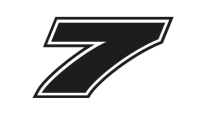
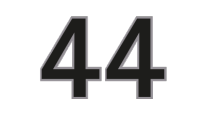
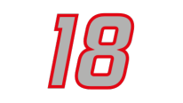
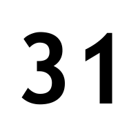
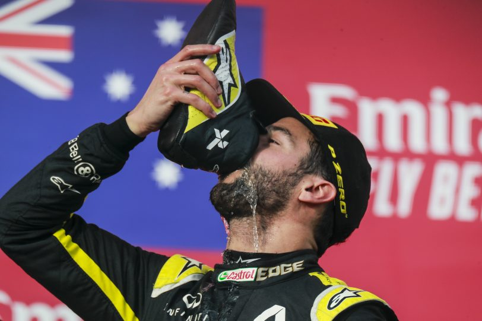
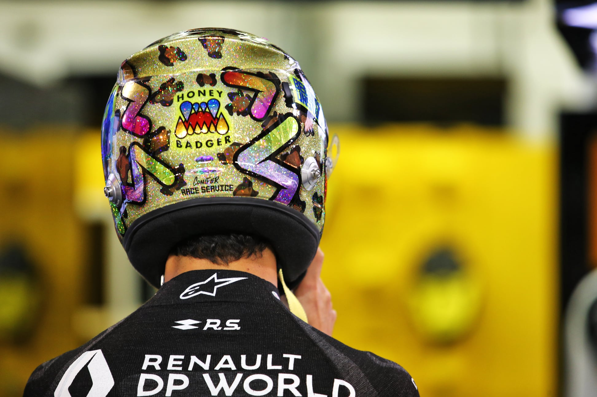

In de Formule 1 strijden er tien constructeurs voor het kampioenschap. Constructeurs zijn eigenlijk teams, maar een klein verschil hierin is dat constructeurs zelf hun auto moeten maken (teams zouden worden voorzien van auto's). Elke constructeur heeft twee coureurs, wat dus een totaal maakt van twintig coureurs in de Formule 1. Elke coureur heeft zijn eigen racenummer, dat overal voor gebruikt wordt en waaraan de coureurs gemakkelijk herkend worden. Dit nummer heeft vaak een betekenis, zoals het nummer van Pierre Gasly geïnspireerd is door zijn favoriete voetballer, die ook nummer 10 heeft. In de tabel hieronder kan je zien welke constructeurs er zijn, welke coureurs daarvoor rijden en wat hun bijbehorende nummer is.
| Constructeur | Coureur 1 | Coureur 2 |
|---|---|---|
| Alfa Romeo | Antonio Giovinazzi | Kimi Räikkönen  | Alpha Tauri | Daniil Kvyat | Pierre Gasly  |
| Ferrari | Charles Leclerc  |
Sebastian Vettel  |
| Haas F1 Team | Kevin Magnussen | Romain Grosjean  |
| Mclaren | Carlos Sainz  |
Lando Norris  |
| Mercedes | Lewis Hamilton  | Valtteri Bottas  |
| Racing Point | Lance Stroll  | Sergio Pérez  |
| Red Bull Racing | Alexander Albon  |
Max Verstappen |
| Renault | Daniel Ricciardo  |
Esteban Ocon  |
| Williams | George Russell  |
Nicholas Latifi  |
De beste
Er kan er natuurlijk maar één de beste zijn. En de beste, dat is tegenwoordig bijna altijd Mercedes. Omdat ze zo'n goede auto hebben, winnen ze eigenlijk elke race. Fouten maken ze zelden. De beste coureur van de paddock van 2020 is hun coureur Lewis Hamilton. Door zijn goede auto en zijn talent heeft hij al zeven weredtitels gewonnen, inclusief die van 2020. Toch is Hamilton lang niet de favoriete coureur van iedereen. Als je aan Nederlanders vraagt wie hun favoriet is, zal zeker tachtig procent van hen Max Verstappen zeggen. Verstappen heeft ook veel talent en doet het al sinds zijn vierde. Hij is de jongste racewinnaar in de Formule 1 ooit. Vaak wordt hij derde in een race, omdat zijn auto van Red Bull nog nét niet goed genoeg is voor het verslaan van de Mercedessen.
Mijn favoriet
Mijn favoriete coureur is de Australiër Daniel Ricciardo. Daniel rijdt voor Renault en is goed, maar zijn auto wat minder. Hij heeft echter wel twee podia gehaald dit jaar, want hij werd twee keer derde. Ricciardo komt uit Perth (Australië) en is geboren op 1 juli 1989. Zijn naam spreek je op zijn Engels uit: rie-kar-do. Ricciardo is mijn favoriete coureur omdat hij altijd lacht en heel optimistisch is. Als er een tegenslag is, of iets gaat niet zoals gehoopt, laat hij zich daar niet door neerslaan. Hij is een uniek karakter in de paddock, net als zijn altijd bijzondere helmen. Hij vindt het belangrijk dat iedereen zichzelf is en die boodschap geeft hij ook door aan zijn fans. Als laatste heeft hij veel doorzettingsvermogen, hij stopt nooit tot hij heeft bereikt wat hij wil. Daniel heeft ook een originele podium celebration. Als het na de huldiging tijd is voor de champagne op het podium, dan schenkt hij dat in zijn raceschoen en drinkt hij het eruit. Ricciardo heeft al veel mensen een 'shoey' laten doen op het podium en het is iets waar hij bekend om staat.
